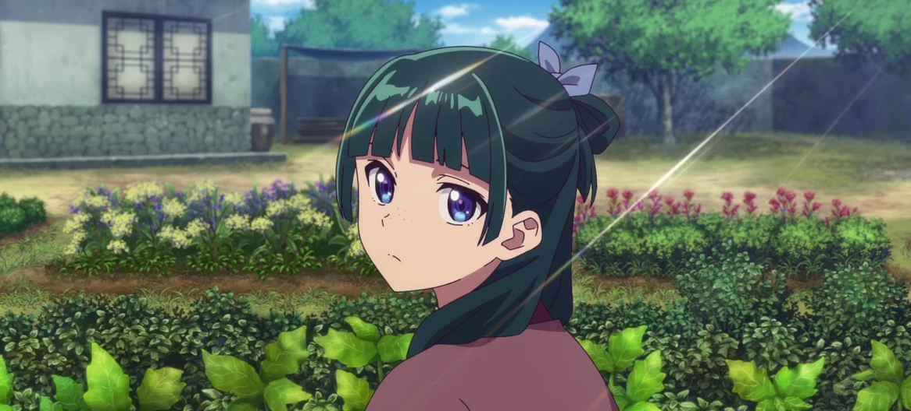

Once Upon a Page
Once Upon a Page

The Apothecary Diaries
A sharp-minded apothecary is pulled into an imperial palace, where she uncovers poisonings and court secrets.
Taken to the Palace

What I wouldn't give for some good street-stall meat skewers. Maomao looked up at the overcast sky and sighed. She lived in a world that was at once a place of unparalleled, sparkling beauty and a noxious, foul, suffocating cage. Three months already. Hope my old man's eating properly. It seemed just the other day she had gone into the woods to gather herbs, and there had met three kidnappers; let us call them Villagers One, Two, and Three. They were after women for the royal palace, and in a word, they offered the world's most forceful and unpleasant marriage proposal.
Now, it wasn't that she wouldn't be paid, and with a couple years' work, there was that glimmer of hope that she might even be able to come back to her hometown. There were worse ways to earn a living-if one went to the royal city of one's own accord. But Maomao, who had been making her way just fine as an apothecary, thank you very much, saw it solely as so much trouble.
What did the kidnappers do with the nubile young women they captured? Sometimes they sold the girls to the eunuchs, putting the proceeds toward a night of drinking for themselves. Sometimes the young ladies were offered in lieu of someone's own daughter. To Maomao, it was a moot question, for now she found herself caught up in their schemes, regardless of the reason. Else, she would never in her life have wished to have anything to do with the hougong, the "rear palace": the residence of the Imperial women.
The place was so thick with the odors of makeup and perfume as to turn the stomach, and even more full of the thin, forced smiles of the court ladies in their beautiful dresses. In her time as an apothecary, Maomao had come to believe there was no toxin so terrifying as a woman's smile. That one rule held true whether in the halls of the most ornate palace or the squalid chambers of the cheapest pleasure house. Maomao hefted the laundry basket at her feet and headed into a nearby building. Unlike the dazzling front façade, the dreary central courtyard housed flagstone-paved washing areas, where the court's servants - people who were neither quite man nor quite woman-did laundry by the armload. Men, in principle, were not allowed in the rear palace. The only men who could enter were either members and blood relations of that most noble family in the country, or former men who had lost a very important part of themselves. Naturally, all the men Maomao was looking at right now were the latter. It was twisted, she thought, but admittedly a logical thing to do.
She set down her basket and spotted another one sitting in the next building over. Not dirty clothes, but clean laundry that had dried in the sun. She glanced at the wooden tag dangling from the handle; it bore an illustration of a leaf along with a number.
Not all of the palace women were literate. It wasn't that surprising: some of them had been brought here by force, after all. And though the rudiments of etiquette were beaten into them before they arrived, letters were not. It would probably be lucky, Maomao reflected, if half the girls that got snatched from the countryside turned out to know how to read. It was, one might say, a hazard of the rear palace growing too populous. Quality was being sacrificed for quantity. Although it in no way equaled the "flower garden" of the former emperor, the consorts and ladies-in-waiting together numbered two thousand people, while with the eunuchs that number came to three thousand. A vast place indeed.
Maomao was a serving girl, a post so lowly she didn't even have an official rank. What more could she expect, as a girl who had no one to back her at court, who had arrived by way of kidnappers to fill out the palace staff? If she had perhaps possessed a body as shapely as a peony, or skin as pale as the full moon, she might at least have aspired to the status of one of the lower concubines, but Maomao possessed only ruddy, freckled skin and limbs with all the elegance of withered branches.
I need to just get this job done.
Maomao picked up the basket with its tag depicting a plum flower and the number 17, and trundled off as quickly as she could manage. She wanted to get back to her room before the frowning sky began to weep. The owner of the laundry in the basket was one of the low-ranked consorts. Her room was rather more lavish than those accorded to the other low consorts in fact, it was downright ostentatious. The occupant, Maomao surmised, must be the daughter of some affluent noble family. When a woman was assigned a palace rank, she was also permitted her own ladies-in-waiting. A minor consort, however, could have two ladies at most, which was why Maomao, a serving girl with no mistress of her own on which to attend, was carting around the woman's laundry like this. A low consort was permitted personal rooms in the rear palace precincts, but they were inevitably on the fringes of the grounds, where the Imperial eye was unlikely ever to fall upon her. If she should, nonetheless, be graced with a night with His Majesty, she would be granted new rooms, while a second such night meant she had truly found a place in the world.
As for those who ultimately never excited the Emperor's interest, after a certain age a consort (assuming her family didn't wield particular influence) could expect to see herself demoted, or even granted as a wife to some member of the bureaucracy. Whether that was a blessing or a curse depended on whom she was granted to, but the fate the women feared most was being bestowed upon one of the eunuchs. Maomao knocked discreetly on the door. A lady-in-waiting opened it and snapped, "Just leave it there." Within, a consort redolent of the sweetest perfume was sipping some alcohol from a cup. She must have been much admired for her beauty in those halcyon days before she had arrived at the palace, but when she got here, she discovered she had known as much about the outside world as a frog who had spent its life in a well. Crowded out by the array of dazzling flowers in this garden, she had lost her will to continue fighting for a place here, and of late had ceased to come out of her room at all.
You know no one is going to come visit you in your own room, right?
Maomao traded the basket in her arms for the one sitting outside the door and went back to the laundry area. There was so much work to do still. She may not have come to the palace of her own volition, but they were at least paying her, and she intended to earn her keep. Maomao the apothecary was diligent-minded, if nothing else. If she kept her head down and did her job, she could hope to leave this place someday, if never, she assumed, to gain royal notice.
Sadly, Maomao's thinking was let us say naïve. She didn't know what was going to happen. No one does; that's the nature of life. Maomao was a relatively objective thinker for a girl of seventeen, but she had a few qualities that continually dogged her. For one, curiosity; and for another, a hunger for knowledge. And then there was her budding sense of justice.
A few days hence, Maomao would uncover a mysterious and terrible truth concerning the deaths of several infants in the rear palace. Some said it was a curse laid upon any concubine who dared to produce an heir, but Maomao refused to regard the matter as anything supernatural.